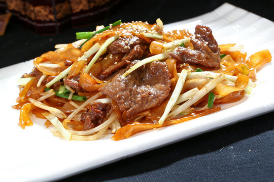

広東料理の世界
広東は中国四大料理の一つで、「食は広東にあり」と言われる豊かな食文化を持っています。気候が温かい広東では、古くから豊かな食材に恵まれており、国内外の多くの人々に愛されてる独自のメニューが発展してきた。
代表的な料理
-
飲茶
お茶を楽しみながら、点心（ティムサム）をつまむ広東省独特の食事習慣です。特に朝食として人気があり、家族や友人とゆっくり過ごす大切な時間です。学校の友達と行くなら、まずは「エビ蒸し餃子（ハーガウ）」を頼むのがおすすめです。半透明のタピオカ粉の皮からピンク色のエビが透けて見えて、口に入れるとぷりぷりの食感が広がります。他にも、甘辛い豚肉が入った「チャーシューメロンパン」や、中から温かいカスタードがとろっと出てくる流沙包（リュウサポウ）」など、おやつ感覚で食べられるメニューがたくさんあって、何時間でもおしゃべりできます。お茶がなくなると、急須のフタを少しずらしておっくのが「お茶を足してください」という合図になるなど、面白いマナーもあります。

-
焼味（シャウメイ）
専用の釜で焼き上げた肉料理の総称です。チャーシューやローストグース、皮がぱりぱりのローストポークなど、見た目も華やかな料理が並びます。広東の街を歩くと、ガラス張りの店の軒先にローストされたアヒルや豚肉が丸ごとつるされているのをよく見かけます。注文すると、職人さんが目の前で大きな包丁を使って豪快にカットしてっくれます。特におすすめなのは「クリスピーポーク「焼肉」で、お肉の上の皮の部分だけが信じられないくらいカリカリに焼かれていて、お肉のジューシーな部分との食感の間違いが最高に楽しい料理です

-
干炒牛河（ゴン茶うにゅうほー）
牛肉とライスヌードルを強火で炒めた、広東人のソウルフードと言える焼きそばです。料理人の火加減の腕が最も試される一品と言われていますこの料理がなぜ難しいかというと、油を使いすぎるとｋギトギトになってしまうし、火が弱いとライスヌードル河粉がフライパンにくっついてボロボロに切れてしまうからです。お皿の底に油がたまらず、面が一本もきれずに、お肉が柔らかいまま強火の香りばしさ鍋気をまとっているのがプロの味です。学生のランチとしても安くてお腹いっぱいになる定番中の定番です。

広東料理の味の極意味
広東料理は「清・鮮・嫩・滑（しん・せん・どん・かつ）」という四つの言葉でその活かし、新鮮で柔らかく、滑らかな口当たりを求めることを追い求めすることを意味しています。そのため、油っこさが少なく、日本人にも非常に親しみやすいの特徴です。これを学生の言葉で簡単に言うと、「清」はスープが透き通っていて毎日食べても飽きないこと。「鮮」は冷凍ではなく生きている魚やエビをその場で調理すること。「嫩」はお肉がパサパサせずに驚くほどしっとり柔らかいこと。「滑」はワンタンの皮のようにツルット喉を通る心地よさのことです。強いパすでごまかさないからこそ、この四つのバランが崩れるとすぐにばれてしまう、実はとてもシビアな料理です。
広東料理のスープ文化

広東料理で欠かせないのが「老火湯（ラオフォタン）」と呼ばれるスープです。季節や体調に合わせて、漢方や食材を煮込みます。「食事にすーぷがないのは、生活に愛がないのと同じ」と言われるほど、広東の家庭では大切にされています。普通のスープと違って、にんじん、だいこん、豚の骨、そしてクコの実やナツメなどの漢方素材を形が崩れるくらい弱火で３時間以上じっくり煮込みます。塩だけで味付けするのに、お肉や野菜の旨味が全部スープに溶け込んでいて、飲むと体がじんわり温まります。広東の若者は、一人暮らしをしても「お母さんのスープが恋しい。」と言っても週末に家に帰るほど、みんなスープが大好きです。
まとめ
「食は広東にあり」と言われる通り、広東料理はその奥深い歴史と、素材を大切にする心で世界中の人々を魅力し続けています。まずは身近な飲茶から、その魅力に触れてみてはいかがでしょうか。日々の忙しい生活の中で、このように体に優しくておいしい広東料理を食べて、元気を出すのはとてもおすすめです。料理のおいしさだけでなく、その背景にある「家族を思いやるスープの文化や「素材を大切にする職人の技術」など、面白い魅力がたくさんあります。お腹がすいたときにふらっと本場の味を体験しに行くと、心も満たされます。